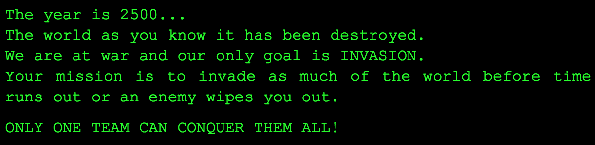

Globe Invasion 3D is a military-inspired invasion game developed for the @Bristol planetarium. The game is played in teams of two; a Military Commander and a Strategist who play together to invade as much of the map as possible before time runs out or another team wipes them out. The Commander controls front line forces and invasions whilst the Strategist controls budget and army developments.The game can be played with up to eight players and can be played on Android or iOS mobile devices. The application is played alongside a server which runs the game computation and displays the game play. For the planetarium, the server is run simultaneously with two projectors which display the game play on the planetarium screen in 3D.

This software project was conducted in a group of 6, where we were the first people ever to achieve 3D real-time interactive game in the @Bristol Planetarium. My main contibutions to the game include: implementing mathematical constructs (e.g. A* search) to preserve the efficiency of the game in 3D rendering; asset creation and management through the use of Autodes Maya; designed and implemented a game tutorial; Created an AI player to provide game flexibility.